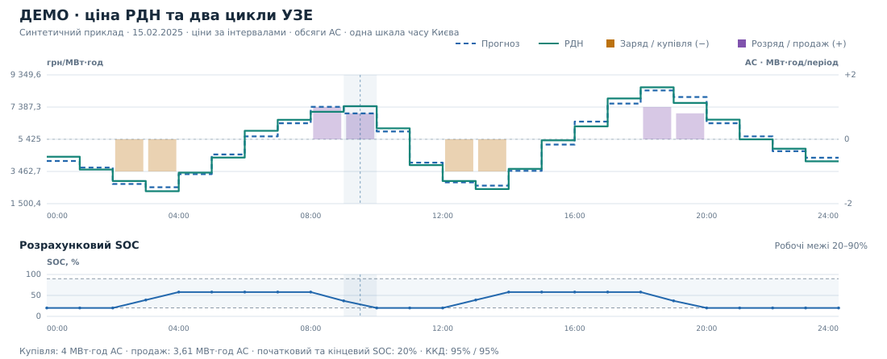
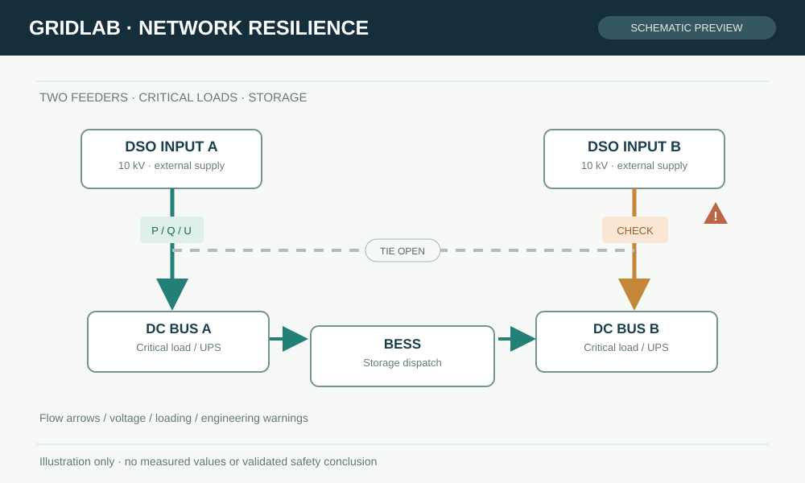
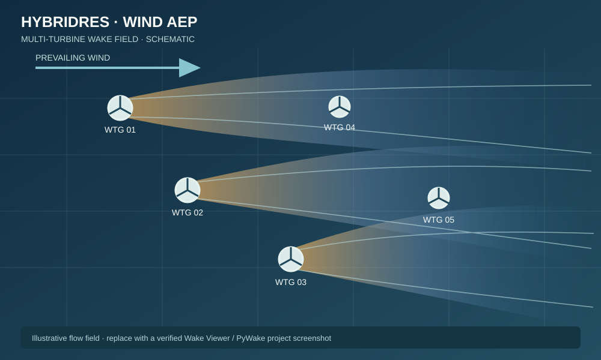
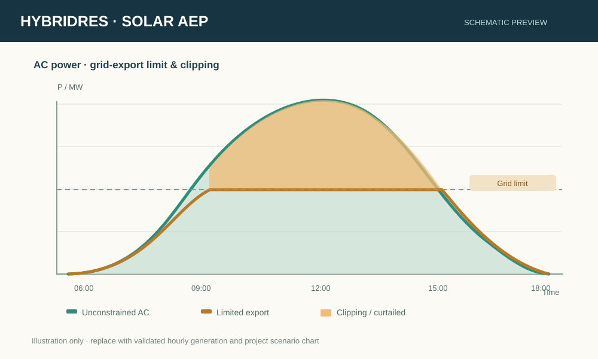
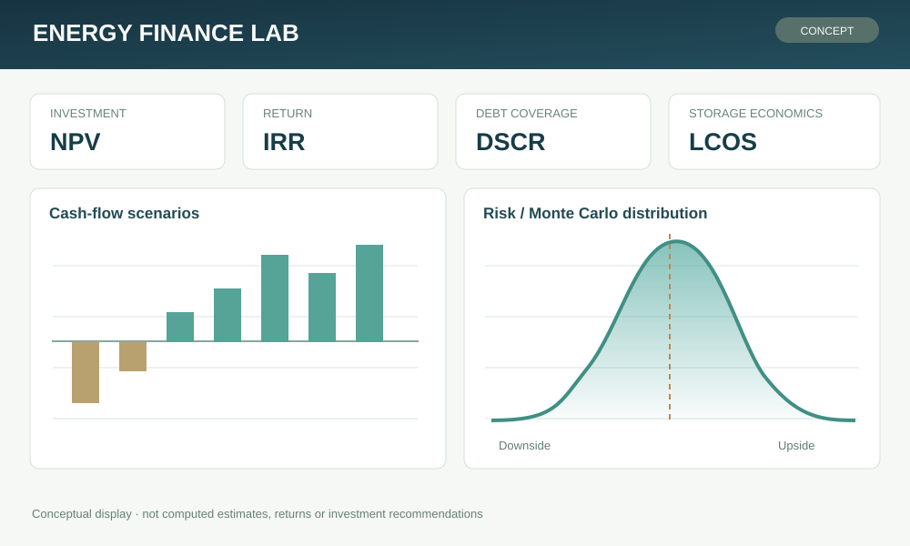

↗
Графік із коду BESSLab; синтетичні ціни й обсяги, не ринковий результат.
01 / 05 BESS · Energy markets Дослідний інструмент
Shadow BESS Lab
Shadow Trading and DAM Forecast Modeling
Дослідне середовище для перевірки прогнозів цін РДН і віртуального тестування торгових стратегій УЗЕ без подання реальних заявок на ринок.
Мета Оцінити, як похибка прогнозу РДН впливає на вибір годин заряду й розряду та розрахункову дохідність УЗЕ.
Підхід Історичні часові ряди, кілька прогнозних моделей, два добові цикли, енергетичний баланс і перевірка обмежень SOC та потужності.
Ключовий результат Порівнювані прогноз і фактична ціна, графік купівлі/продажу, SOC та розрахунковий фінансовий ефект.
Інструменти Python · FastAPI · PostgreSQL · статистичні моделі · оптимізація УЗЕ

↗
Схематичне прев’ю. Не фактичний результат розрахунку та не виконавча схема.
02 / 05 Power systems · Reliability Інженерний прототип
GridLab
Critical Infrastructure Resilience Assessment
Інструмент для оцінювання стійкості електропостачання критичної інфраструктури та перевірки аварійних конфігурацій мережі.
Мета Виявити критичні елементи, перевантаження та порушення допустимих режимів за втрати елементів живлення.
Підхід Сценарні розрахунки усталеного AC power flow, аналіз резервних вводів, шин, трансформаторів, навантажень та УЗЕ.
Ключовий результат Однолінійна схема з напрямками потоків P/Q, параметрами U та інженерними попередженнями щодо обмежень.
Інструменти Python · pandapower · FastAPI · SVG · SQLite

↗
Ілюстрація wake-ефекту; буде замінена на перевірений кадр Wake Viewer.
03 / 05 Wind energy · AEP Діючі розрахункові модулі
HybridRES · Wind AEP
Wind Resource and Wake Loss Assessment
Оцінювання ресурсу та виробітку ВЕС із урахуванням розміщення турбін, рельєфу й аеродинамічної взаємодії.
Мета Оцінити вплив розміщення вітротурбін і wake-ефекту на валовий та чистий річний виробіток.
Підхід Калібрування метеорологічних даних, оцінювання рельєфу, моделювання слідів PyWake та незалежне зіставлення з FLORIS.
Ключовий результат Карти вітрового потоку та wake-ефекту, розподіл втрат і результати Gross/Net AEP для аналізу варіантів.
Інструменти ERA5 · atlite · WindNinja · PyWake · FLORIS
Дізнатися про платформу HybridAEP

↗
Схематичний графік clipping; не результат конкретного проєкту PVsyst.
04 / 05 Solar PV · AEP Інженерні розрахунки
HybridRES · Solar AEP
Solar PV Performance and Yield Assessment
Оцінювання генерації СЕС, підбір конфігурацій DC/AC та аналіз впливу мережевих обмежень на відпуск електроенергії.
Мета Порівняти енергетичний виробіток різних конфігурацій СЕС і вплив обмежень видачі потужності.
Підхід Сценарії в PVsyst, погодинні профілі генерації, моделювання DC/AC, інверторних втрат і clipping.
Ключовий результат Порівняння погодинної генерації, втрат від обмеження потужності, PR та річного енергетичного виробітку.
Інструменти PVsyst · Python · сценарний аналіз · Excel
Дізнатися про платформу HybridAEP

↗
Концептуальний макет; фінансові модулі ще не реалізовані.
05 / 05 Project finance · Quant Концепція
Energy Finance Lab
Energy Investment and Quant Analytics
Концепція середовища для оцінювання економіки енергетичних проєктів, моделювання ринкової виручки та кількісного аналізу ризиків.
Мета Підтримати обґрунтування інвестиційних рішень за різних цінових, технічних і фінансових припущень.
Підхід Побудова фінансових моделей, прогнозування ринкових сценаріїв, аналіз чутливості, Монте-Карло та стрес-тести.
Очікуваний результат Очікувані виходи: NPV, IRR, DSCR, LCOE/LCOS, прогноз cash flow та показники ризику; функції заплановані.
Інструменти Фінансове моделювання · Python · Monte Carlo · сценарний аналіз
Заплановані аналітичні модулі Investment Analysis CAPEX/OPEX, cash flow, NPV, IRR, WACC, DSCR, LCOE/LCOS, аналіз чутливості. Energy Market Analytics Ціни РДН, ВДР і БР, прогнозування, виручка УЗЕ, арбітраж та допоміжні послуги. Quantitative Risk Analysis Монте-Карло, розподіли дохідності, стрес-сценарії, VaR/CVaR та порівняння комерційних моделей.